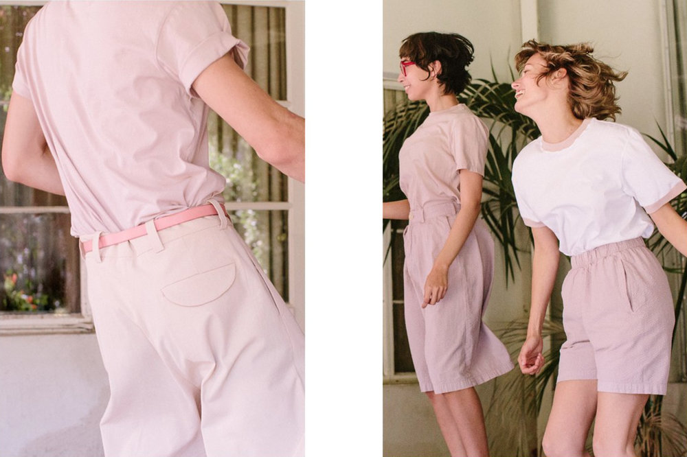
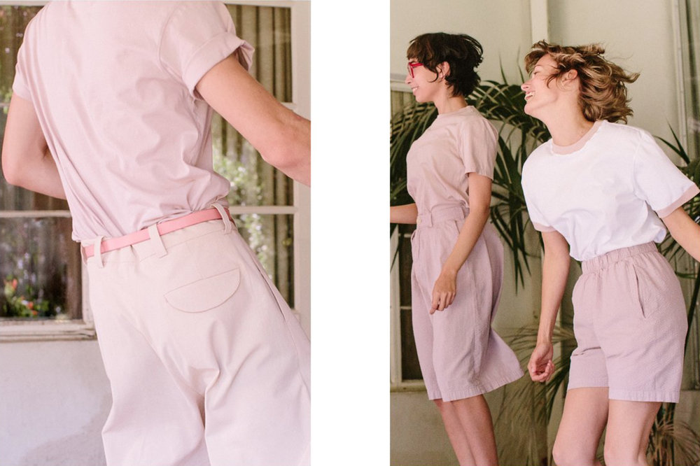

Olderbrother Featured in Bon Appétit
These Designers Just Want You to Get Amped About Their Chaga-Dyed Clothes
 


By Amiel Stanek
Photos by Alex Lau
Apr 02, 2019
Bobby Bonaparte and Max Kingery, the duo behind the fashion line Olderbrother, could give a TED Talk on the nightmarish impact the garment industry has on the environment. But they would rather not. Instead, they quietly construct their whimsical unisex clothes from sustainably harvested fabrics like organic Japanese cotton and use vivid dyes made from almost exclusively edible pigments. In conceiving each season’s limited-run colorways, they draw inspiration from ingredients that are animating the wellness world at that particular moment—fiery-orange turmeric, golden saffron, the muted earth tones of healing mushrooms—and spend months of R&D figuring out how to best translate those hues to evocative, relatable garments that integrate seamlessly into people’s lives.
“We’re not looking at a Pantone book and asking, “What’s pretty this season?” Kingery explains. “Just the idea that these are natural dyes might spark interest, but we want to transcend that, explore things that people have a specific relationship with. We want people who love chaga mushrooms to see a chaga-dyed shirt and get amped.”
By limiting production and declining to repeat most colors from season to season, Olderbrother blends the principles underpinning both the Slow Food movement and hypebeast streetwear culture. “Keeping things seasonal helps to make them more special,” Bonaparte says. “If you want a coffee sweatshirt from a year ago, you’re kind of out of luck. We have too much exploring to do; we’re really just scratching the surface.”
Bonaparte and Kingery both grew up in Portland, OR—who would’ve guessed!—but sunny Los Angeles is home for them now. Below, the duo walks us through some vibe-y scenes from their production facility and brand-new Venice Beach retail store.
“Our seasons are like a tasting menu at a restaurant. You’re going to come back for a unique experience, not the thing you had last year when you came. It’s seasonal, and we’re pushing the level. Slow food pioneered all of this. What we’re doing, wellness, all of it. It’s reshaped the way people dine, and the way that people live. It’s about experiences, not something that’s cold and transactional.”
“We were going through foraging books, and interestingly enough there is a whole category of mushrooms used in dying, but most of them aren’t edible. We started experimenting with chaga, which was a total wild shot, because it wasn’t in the dying-fungi category—we just kind of stumbled on it. It worked really powerfully as a dye, and people are putting it in their coffee! We were like, “Jackpot!” It’s a part of healing, and we were able to take it full circle.”
“We start with wild Siberian chaga. It’s really amazing—we have one mushroom that’s the size of someone’s lower torso. The unsexy part is the extraction [of the pigment from the mushroom itself], which is what creates something that actually adheres to fabric.”
“Health starts with what you put in your body, but you have to think about what you wear, too. We don’t have respirators in our facility. Our warehouse looks way more like a kitchen than an industrial dye house. It smells like cooking!”